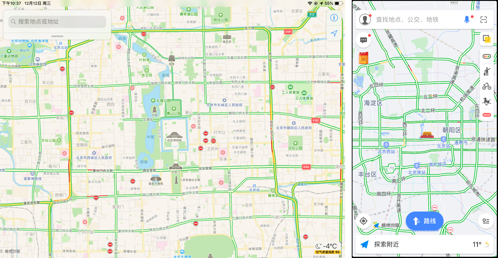
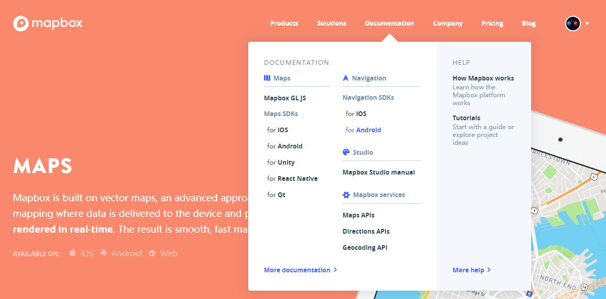
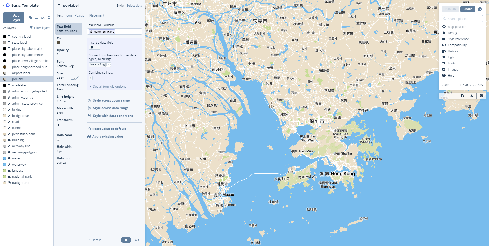
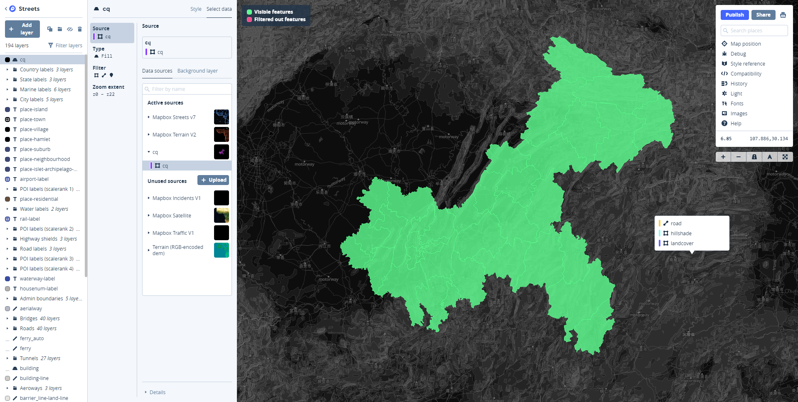
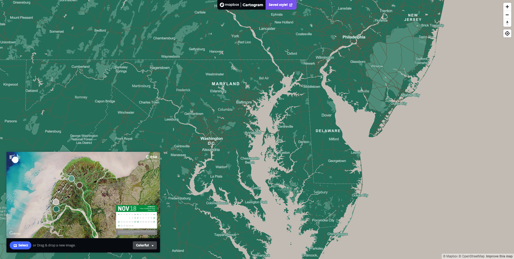
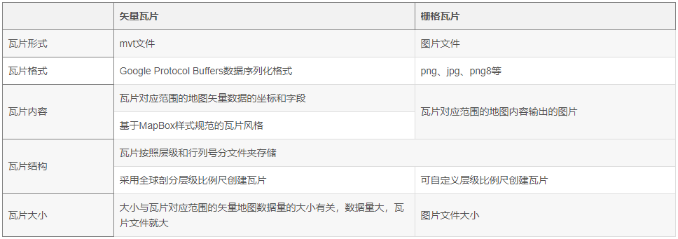
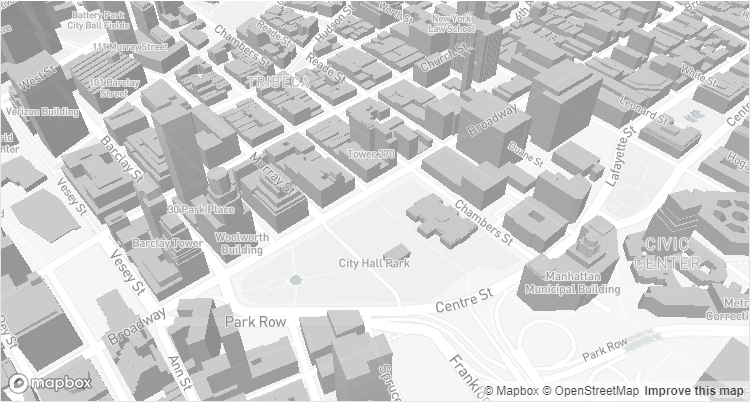
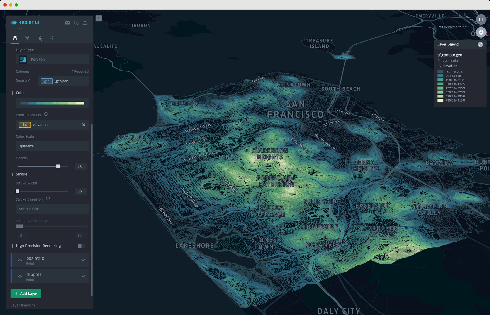
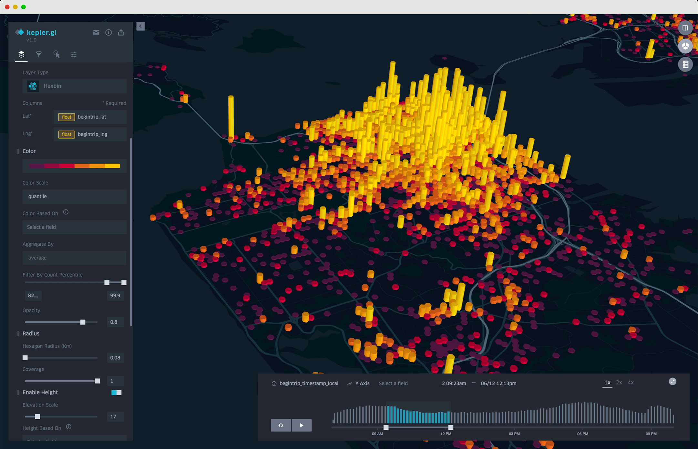

接触 Mapbox 是听闻它的地图风格非常漂亮，在这里，不得不说，国外的地图风格就是比国内的养眼。如下图，左为苹果自带地图（基于高德），右为高德地图，下图中可能不直观，苹果用户可自行体验。

但是，当我进入 Mapbox 官网的时候，这“加粗的小号英文字体”是怎么回事，着实看着难受，身为强迫症患者，我硬是把他加粗的样式去掉了，或者放大。后来发现，只有 Windows 下的浏览器是这样，在 MacOS 、Linux 上还是赏心悦目的，这个锅不知道该不该 Windows 背。

既然说 Mapbox 的地图风格漂亮，下面就把官方的 Gallery 拿出来看一看，这些并不只是图片，是可以点开查看的，可放大、缩小等交互功能。
接下来，看看 Mapbox 那些精美的产品……
Mapbox Studio
Mapbox Studio 应该算是核心产品，官方称其为开发者、设计师和制图师而作。借助 Mapbox Studio，你可以自定义地图的方方面面，颜色、宽度、字体、等等，还可以添加自己的数据。配合 Mapbox 的开发库可打造更多精彩的应用。
- Mapbox 在线 Demo 150个合集 （一）
- Mapbox 在线 Demo 150个合集 （二）
- Mapbox 在线 Demo 150个合集 （三）
- Mapbox 在线 Demo 150个合集 （四）


这里要提一下 Mapbox Cartogram ，它是一个快捷配图工具，选择图片自动获取图片的颜色配置地图，可以手动托选修改颜色，也可以修改整体的地图风格，支持炫彩、暗黑、明亮或者常规风格。生产的地图风格会直接保存你的 Mapbox 账户下，并且可以在 Studio 中继续编辑。

Mapbox GL JS
后来接触就是冲着 Mapbox GL JS 去的了，因为本人只是稍微了解一些 WebGIS 相关的东西。
Mapbox GL 中的 GL 指的是 WebGL，这是它最大的特点，它使用 WebGL 渲染地图和图层，解决了 WebGIS 开发者头疼的“大量 GIS 数据渲染、交互问题”。另外，Mapbox GL 采用矢量瓦片渲染，与传统的栅格瓦片相比，矢量瓦片是在客户端渲染，也就意味着可以更加方便的个性化设置。
下面附上矢量瓦片与栅格瓦片的特点对比，摘自“解读SuperMap矢量瓦片应用”。

在 Mapbox GL JS 之前，还有一个 mapbox.js，它是 Leaflet 的一个超集，现在在官网已经看不到它的影子了，但只是将其影藏，还是可以看到它的官方文档的。既然官方都藏起来了，我们就尽情地享用 Mapbox GL JS 吧！
Mapbox 的精华在于它的样式规范（Mapbox Style Specification），在它的“领导”下，你可以疯狂的个性化配置你的地图和图层。比如要显示 3D 建筑，只需要简单几步即可得到下图效果，摘自“Display buildings in 3D”。1
2
3
4
5
6
7
8
9
10
11
12
13
14
15
16
17
18
19
20
21
22
23
24
25map.addLayer({
'id': '3d-buildings',
'source': 'composite',
'source-layer': 'building',
'filter': ['==', 'extrude', 'true'],
'type': 'fill-extrusion',
'minzoom': 15,
'paint': {
'fill-extrusion-color': '#aaa',
// use an 'interpolate' expression to add a smooth transition effect to the
// buildings as the user zooms in
'fill-extrusion-height': [
"interpolate", ["linear"], ["zoom"],
15, 0,
15.05, ["get", "height"]
],
'fill-extrusion-base': [
"interpolate", ["linear"], ["zoom"],
15, 0,
15.05, ["get", "min_height"]
],
'fill-extrusion-opacity': .6
}
}, layerId);

样式配置中可以看到配置项中有一个属性叫“minZoom”，与之对应的还有“maxZoom”，它可以控制图层在哪个缩放级别显示。这在其他框架中一般是通过监听地图的缩放级别（zoom）去显示、隐藏目标图层的。还有一个“filter”属性，它能让你轻松的操作数据的显示，这也是我认为 Mapbox GL JS 极其方便的原因之一。
kepler.gl
Mapbox 还与 Uber 联合推出了开源可视化工具 kepler.gl ，它可以完成复杂的数据分析，生成非常漂亮的可视化效果，并且可以分享。下图摘自 kepler.gl。


Mapbox - GitHub
Mapbox 是一个开源的公司，在 GitHub 上拥有几百个仓库。Mapbox 的开源技术为 GIS 做出了很大的贡献。官方开源介绍：OPEN SOURCE
Mapbox 还有很多好玩的东西，移动端、AR、汽车平台等等……
个人看来，Mapbox 完整的开源体系是最适合个人开发者学习的。遗憾的是 Mapbox 中国 还未完全上线，希望可以早日用上符合中国的地图（Maps）、导航（Navigation）、搜索（Search）、工作室（Studio）等。
嗯，好好学习，争取做一个有意思的小东西来。